Mira — experiment results that say when to decide
- Role
- UI/UX & Product Designer
- Platform
- Web, desktop
- Domain
- SaaSAnalytics
- Team
- Solo concept
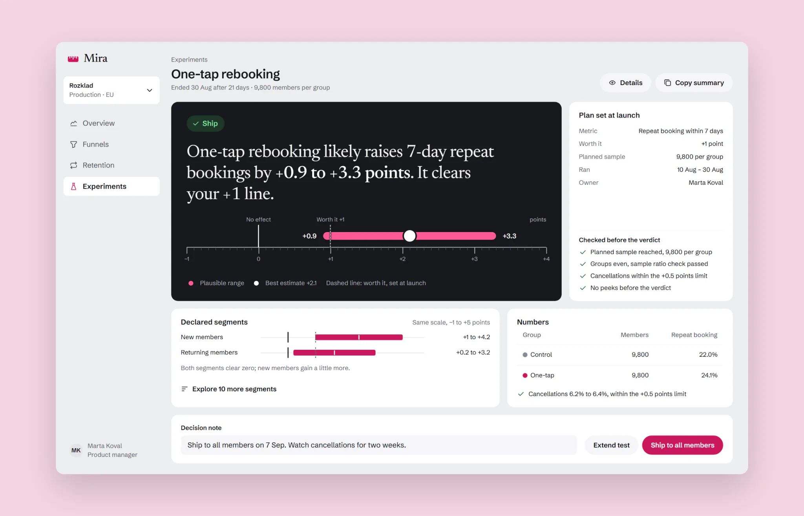
- Problem
- Teams using Mira shipped A/B “wins” off a green badge. 41% of shipped winners were stopped before the planned sample, and 9 of 24 rechecked later showed no effect.
- What I did
- Ran JTBD interviews, a retro of 86 past decisions and a test of four ways to show the same result. Then I redesigned results, test setup, segments, funnels and retention.
- Result
- Correct decisions in the test rose from 59% to 72%, and early stops in the pilot fell from 36% to 19%. Showing p-values openly failed, and analysts didn’t improve.
Mira is a product analytics and experiments tool for teams of 20 to 300 people. I redesigned how it shows experiment results to the product managers, growth marketers and analysts who decide what ships.
Concept. Product, users and data are fictional. Every interval on the screens is computed by a script.
Context
Every screen shows Mira’s demo workspace, Rozklad, a class-booking app for gyms: 182,000 visits in 30 days, 1,690 paid plans. The old results page put the lift in big type next to a green “Significant” badge, with the p-value in small grey text. Results appeared from the first hour of a test.
Page logs showed how it was read. 72% of visits to a result lasted under 40 seconds, only 9% scrolled down to the interval, and 58% of views came before the planned sample was in.
This is a solo concept, written the way it would run in a team: a product lead, an analyst, two front-end engineers and me. I ran the research, the design and the test. Six weeks of design, then an eight-week pilot.
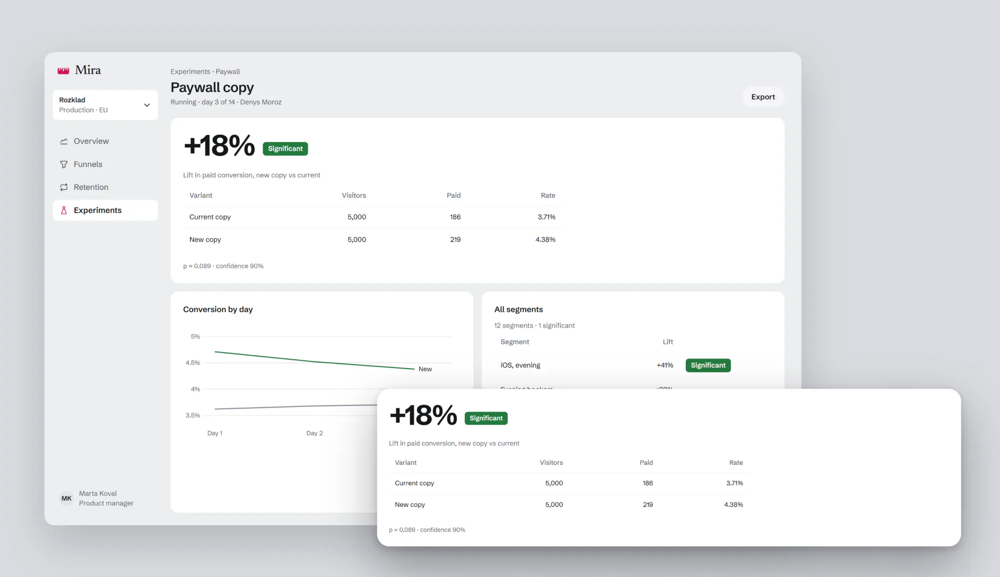
Constraints
- The statistics engine stays. Fixed-sample tests, as the teams already plan them. I could change how a result reads, not the maths behind it.
- Analysts still need p-values. They sign results off, and someone asks them “is this significant?” six times a week.
- The screen can’t invent a threshold. What counts as worth shipping is the team’s call, so it has to be set before the test starts.
- The page itself can’t be A/B tested. Whether a decision was right shows up months later, in a holdout.
Process
I started with jobs, not features. JTBD interviews with 6 product managers, 4 growth marketers and 4 analysts asked what decision they open a result for, and who they explain it to afterwards.
“I don’t need statistics. I need something I can defend at Friday’s review.”
Marta, product manager
Then a retro of decisions rather than clicks: 86 experiments from 3 workspaces over 12 months, and what happened to each.
- 31 of 86 tests were stopped before the planned sample. Of 41 shipped as winners, 17 were stopped early.
- 9 of 24 winners rechecked with a holdout showed no effect. Shipped noise, at 38%.
- 10 of 29 flat tests shipped anyway after someone found a “significant” segment.
- Funnels and cohorts had no test markers, so a seasonal rise was credited to whichever test had just shipped.
I ranked six hypotheses by ICE. Showing p-values, confidence intervals and power openly came first: analysts asked for it, and it was cheap.
To compare ideas on the same data, I ran a comprehension test, between subjects: 4 versions of the results page, 48 people each, half product and growth, half analysts. Each person made 8 decisions with a known right answer: 3 real effects, 3 tests with no effect and 2 stopped too early. The rule for a correct decision was agreed with two analysts before the test. I measured correct decisions, time and confidence from 1 to 5.
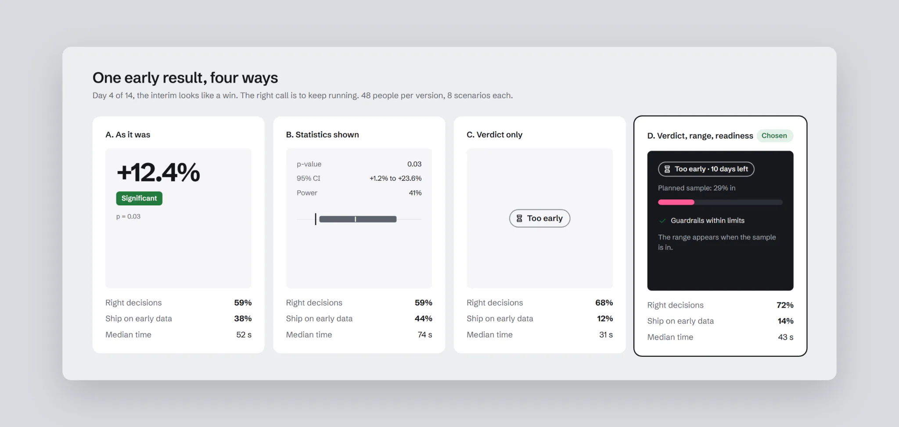
Key decisions
How do we show uncertainty without statistics words?
Options: a lift bar with error whiskers; “probability that B is better: 94%”; a plausible range on a ruler with zero and a worth-it line. I chose the ruler: it shows at once whether the range crosses zero, whether it clears the line, and how wide it is. “94%” was read as a sure win. The cost: the p-value moves to Details, and growth gets an extra step at launch to set the line.
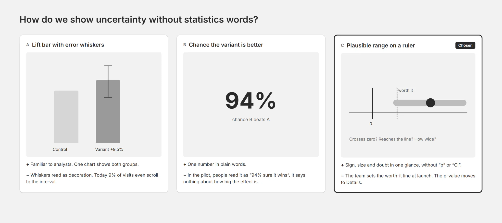
When does the screen give a verdict?
Options: numbers only; a verdict at any time, even mid-test; a verdict only once the planned sample is in. I chose the third. The verdict has four states, each a word and an icon, never colour alone: Ship, Don’t ship, No clear difference, Too early. The cost: no early signal for stakeholders, and tests run longer.
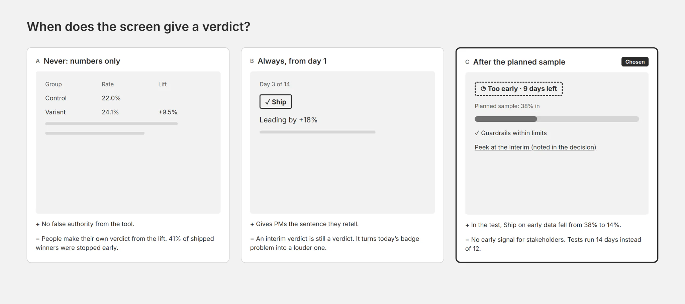
Which segments show by default?
Options: every segment in a table; the overall result only; the overall result plus segments declared at launch. I chose the third: other segments are a click away and marked exploratory. The cost: a real effect in an undeclared segment is found later.
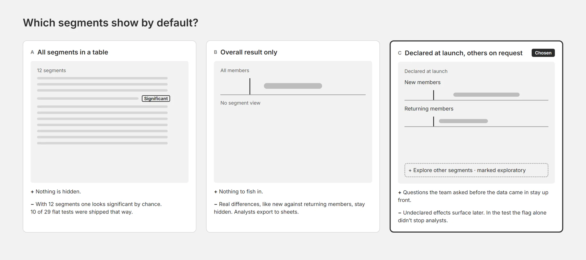
A sentence first, then the range
The result opens with a sentence a product manager can repeat at review, with the range in it: “likely raises 7-day repeat bookings by +0.9 to +3.3 points.” Under it, the ruler shows zero, the worth-it line the team set at launch and the plausible range. Mira comes from “міра”, Ukrainian for “measure”, so the ruler is the product’s one memorable element: a dark instrument panel, a graduated rule, a raspberry range. Everything around it stays quiet grey.
A flat test gets the same treatment. The paywall copy moved paid conversion by −0.2 to +0.6 points, so the sentence says it’s no different from zero.
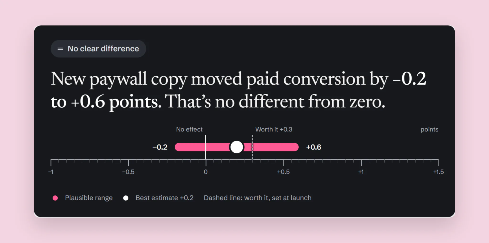
Analysts keep everything they had, one click away in Details: p-value, z, relative interval, power and the sample ratio check.
Too early is a state, not a missing number
Until the planned sample is in, there is no lift and no range. The panel says how much of the sample is collected and when the verdict comes. The guardrail metrics are checked meanwhile, because harm can stop a test early. Benefit can’t.
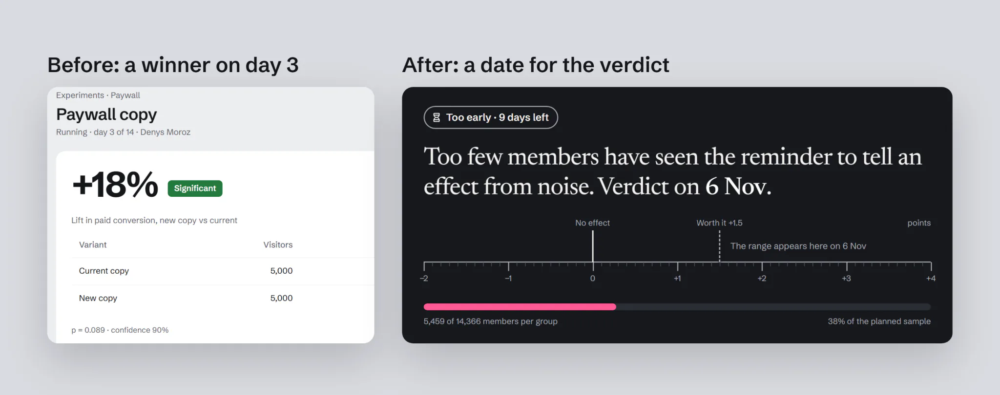
When something goes wrong, the panel says so in the same way: a guardrail breach stops the test and shows how far over the limit it went.
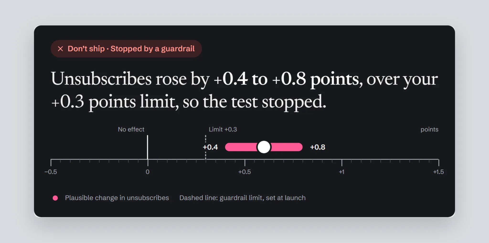
The worth-it line is set when the test is created. Mira turns it into a planned sample, 14,366 members per group, and a verdict date.
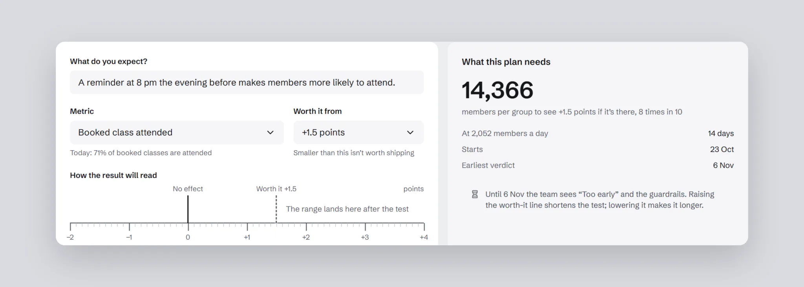
Segments can’t rescue a flat test
Exploratory segments come with a warning and a correction for multiple comparisons. With 12 segments, a win can show up by chance alone. In the paywall test, “iOS, evening” looked like a win at +0.1 to +2.7 points. Corrected, it is −0.5 to +3.3: no different from zero.
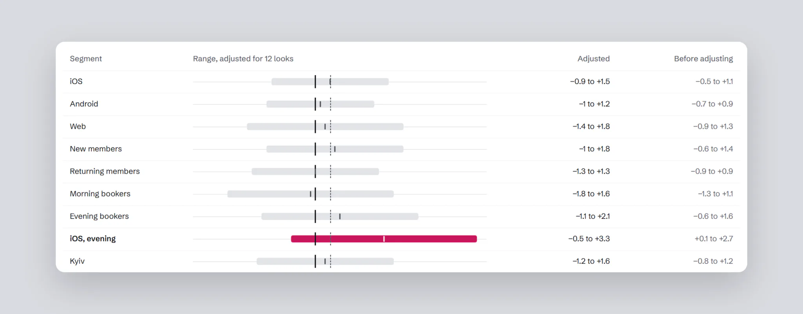
Context on every chart
The funnel marks when each test ran and when the season started, so a rise isn’t credited to the wrong change. Cohorts mark the rollout the same way.
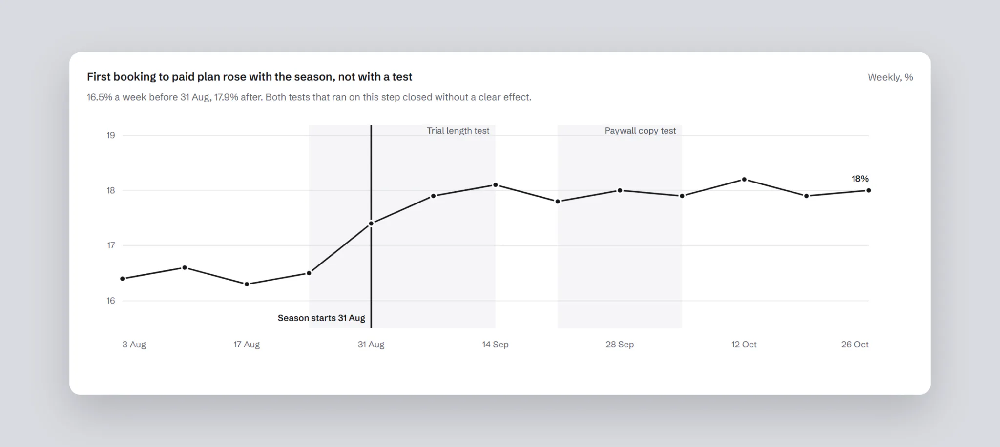
The experiments list keeps running and closed tests apart. A running test shows how much sample is in, in grey; only a finished test shows a range.
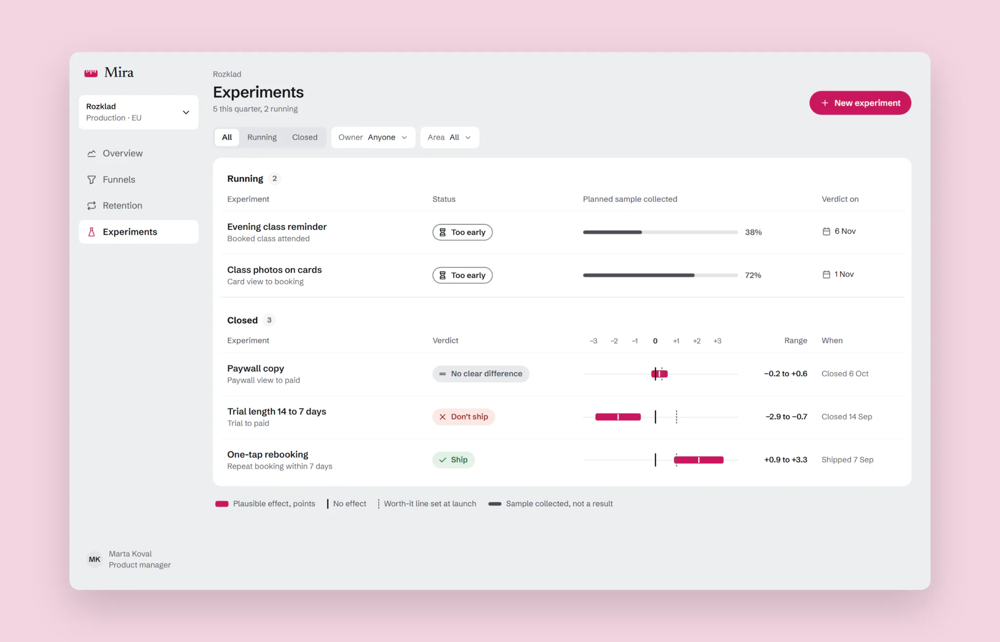
States and edge cases
A decision screen has to hold up on its worst day too. Every control has hover, pressed, focus and disabled states, with one focus ring that turns light on the dark panel. The ruler has rules for its limits: a range wider than the axis, a range entirely below zero, a very narrow one. Stopping a test asks for a reason, and a broken 50/50 split hides the verdict instead of showing a wrong one.
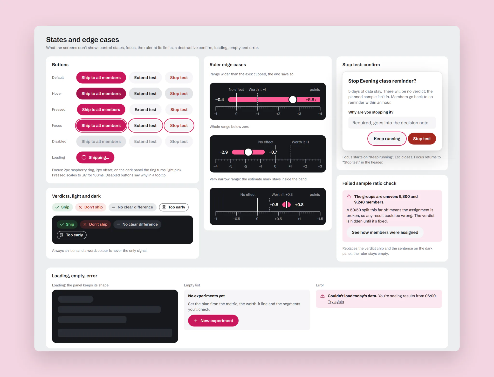
Result
The hypothesis that failed. Showing p-values, intervals and power openly changed nothing that mattered. Correct decisions stayed at 59%, and decisions took 74 seconds instead of 52. Worse, people shipped more on early data, 44% instead of 38%, and were more sure of it: confidence on those wrong calls was 4.1 out of 5. They found the small p-value of an early peek and read it as a verdict. More truth didn’t mean more understanding: people turned any number into “win” or “lose” on their own.
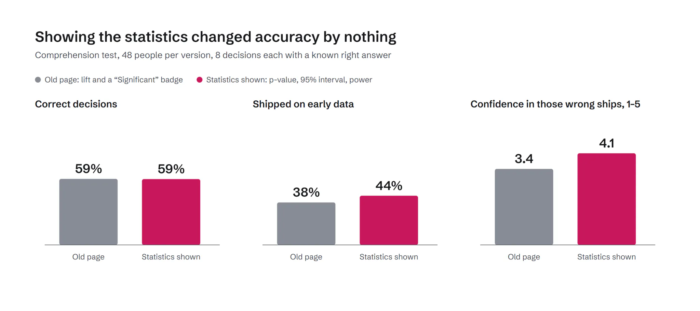
So the product gives the verdict itself, right and on time, and keeps the statistics in Details for those who want them.
The final version, with the verdict, the range and sample readiness, against the old page:
- Correct decisions rose from 59% to 72%, +13 points (+6 to +20 across people). Decisions took 43 seconds instead of 52.
- Shipping on early data fell from 38% to 14%. People now doubt themselves when they’re wrong: confidence 3.9 on right calls, 3.0 on wrong ones.
- In the pilot, 3 workspaces over 8 weeks, tests stopped before the planned sample fell from 36% to 19%, 5 of 26. The cost: the median test now runs 14 days instead of 12.
The surprise in one segment. Product and growth people gained the most, from 46% to 71%. Analysts didn’t move: 72% to 73%. On tests with no effect they even did worse, 81% to 72%, though with 24 people per group that range runs from −26 to +8 points, so it’s a signal, not a finding. They opened segments, found one that looked significant and shipped. The exploratory label didn’t stop them. So the final version puts the correction into the segment view itself: ranges widen for every extra look, and a segment that only wins before correcting says so. That version hasn’t been tested yet.
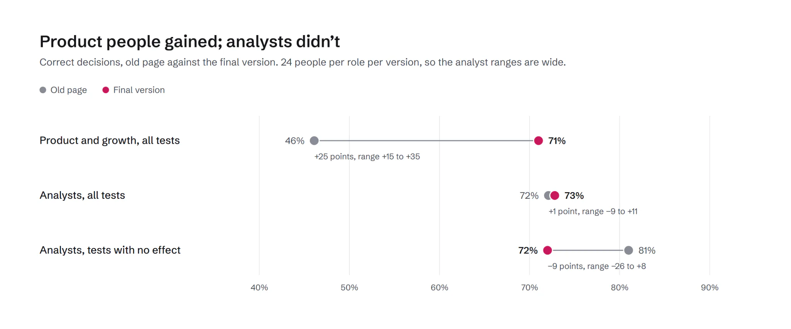
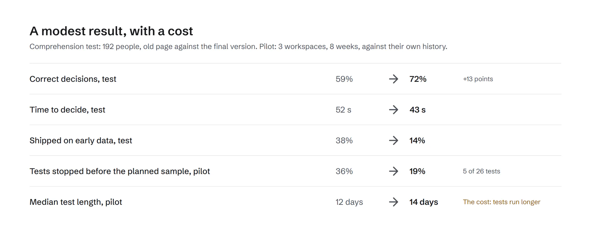
What I learned
- Transparency isn’t understanding. Given more numbers, people still made up a verdict, so the product should give the right one.
- Timing is part of the design. The same verdict is harmful on day 3 and right on day 14.
- Experts need a different guard. Analysts didn’t misread the result; they went looking for another one.